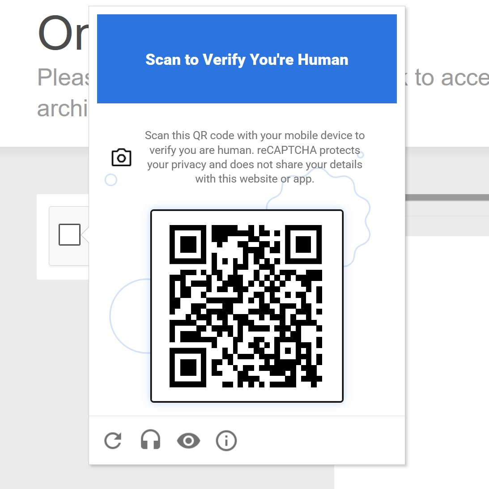

谷歌新一代的 reCAPTCHA 验证码系统与 Android 上的 Google Play 服务绑定。这意味着不带 GMS 的系统都将自动无法通过验证，这项要求迫使 Android 用户必须运行版本号为 25.41.30 或更高的谷歌专有应用框架，仅仅是为了证明自己是人类
当 reCAPTCHA 标记其认为的可疑活动时，它会放弃传统的图像拼图，转而要求拿手机扫描二维码。该扫描操作需要 Play 服务在后台运行，并与谷歌的服务器进行通信。对于任何剥离了谷歌软件的第三方定制系统验证将失败，然而面对中国大陆的网络环境加上国行机并没有默认启用 GMS 组件，可能会成为一块绊脚石
此外，虽然谷歌豁免了运行 iOS 16.4 或更高版本的苹果用户安装额外应用，但在 iOS 15.0-16.4 的设备需要从 App Store 下载 reCAPTCHA 应用辅助验证，同时出问题的还有国产深度定制ROM以及华为鸿蒙星河版（HarmonyOS Next）中卓易通的 Android 容器环境。不过现在越来越多的网站转向使用 Cloudflare Turnstile 验证码以保护站点安全，后续可能会因谷歌这一项调整，逐步移到别家提供商以确保用户体验
当 reCAPTCHA 标记其认为的可疑活动时，它会放弃传统的图像拼图，转而要求拿手机扫描二维码。该扫描操作需要 Play 服务在后台运行，并与谷歌的服务器进行通信。对于任何剥离了谷歌软件的第三方定制系统验证将失败，然而面对中国大陆的网络环境加上国行机并没有默认启用 GMS 组件，可能会成为一块绊脚石
此外，虽然谷歌豁免了运行 iOS 16.4 或更高版本的苹果用户安装额外应用，但在 iOS 15.0-16.4 的设备需要从 App Store 下载 reCAPTCHA 应用辅助验证，同时出问题的还有国产深度定制ROM以及华为鸿蒙星河版（HarmonyOS Next）中卓易通的 Android 容器环境。不过现在越来越多的网站转向使用 Cloudflare Turnstile 验证码以保护站点安全，后续可能会因谷歌这一项调整，逐步移到别家提供商以确保用户体验
